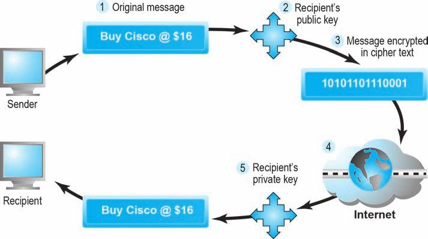
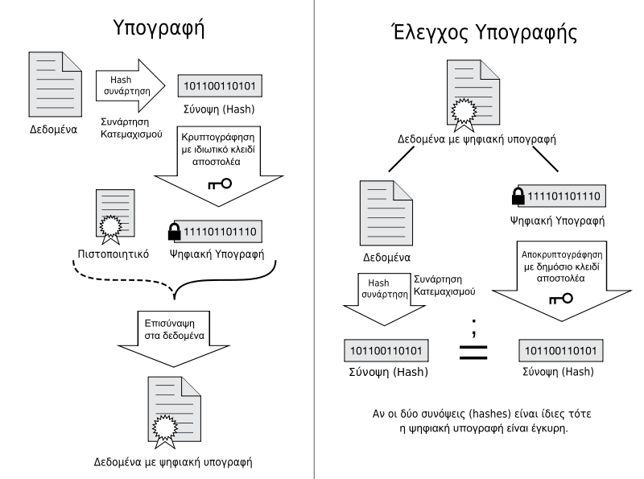

Καθώς το κυβερνοέγκλημα αυξάνεται η διαχείριση του Η.Ε. πρέπει να προετοιμαστεί να αντιμετωπίσει τις εγκληματικές επιθέσεις.
Μπορεί να οριστεί ότι είναι η Εμπιστευτικότητα (Confidentiality), η Ακεραιότητα (Integrity) και η Διαθεσιμότητα (Availability) της πληροφορίας.
Η πληροφορία μένει μυστική και μόνο τα εξουσιοδοτημένα άτομα έχουν πρόσβαση.
Η πληροφορία δεν πρέπει να είναι «ορατή» από κανέναν εκτός από τον προβλεπόμενο λήπτη.
Η πληροφορία που μεταφέρεται από μια οντότητα σε μια άλλη οντότητα δεν πρέπει να έχει αλλοιωθεί με κανένα τρόπο.
Η ακεραιότητα περιλαμβάνει και την ακεραιότητα της πηγής.
Υπάρχουν μηχανισμοί που ελέγχουν την μη δυντατότητα τροποποίησης και μηχανισμοί ανίχνευσης τροποποίησης.
Η μη δυνατότητα πρόσβασης στην πληροφορία έστω και αν έχουν ικανοποιηθεί άλλα μέτρα ασφάλειας.
Επιθέσεις όπως η άρνηση υπηρεσίας (denial of service ή DoS) είναι ένα παράδειγμα.
Το χαρακτηριστικό του είναι η μοναδικότητα μέσα σε ένα πλαίσιο τοπικότητας και σκοπιμότητας.
Είναι το πρώτο βήμα πριν την αυθεντικοποίηση και εξουσιοδότηση στη διαδικασία πρόσβασης στην πληροφορία.
Μέσω της αυθεντικοποίησης γίνεται έλεγχος και επιβεβαίωση της οντότητας που έχει κάνει την ταυτοποίηση.
Επιβεβαιώνεται δηλαδή ότι η οντότητα είναι πράγματι αυτή που ισχυρίζεται ότι είναι.
Αυτό μπορεί να γίνει με τους εξής τρόπους:
Με την εξουσιοδότηση δίνονται δικαιώματα στην οντότητα σχετικά με το σε ποιές πληροφορίες μπορεί να έχει πρόσβαση και τι είδους πρόσβαση.
Είναι το τρίτο βήμα μετά την ταυτοποίηση και αυθεντικοποίηση.
Σημαντικό ρόλο έχει ο διαχειριστής του συστήματος.
Αναφέρεται στη δυνατότητα καταγραφής και ιχνηλάτησης της οντότητας που κακόβουλα ίσως προκάλεσε πρόβλημα και η προσάρτηση ευθυνών σε αυτή.
Τα αρχεία log και audit trail είναι ένα παράδειγμα.
Η οντότητα που συμμετέχει στη συναλλαγή δεν μπορεί να αρνηθεί τις ενέργειές της.
Πως είμαστε σίγουροι ότι οι λειτουργίες είναι σωστές και ασφαλείς.
Τα προσωπικά στοιχεία δεν πρέπει να μοιράζονται σε τρίτους.
Αν και η ασφάλεια είναι απαραίτητη και αναγκαία, υπάρχουν και «φωνές» που αντιδρούν για λόγους όπως:
Τα μέτρα ασφάλειας κάνουν πιο δύσκολη την επικοινωνία μεταξύ πελάτη καταστήματος και αυτό σημαίνει λιγότερα κέρδη.
Δημόσιοι οργανισμού θέλουν να έχουν προσβαση στα προσωπικά στοιχεία για λόγους δημόσιας ασφάλειας.
Οι πιο κύριες απειλές είναι:
Απειλεί την ακεραιότητα του συστήματος και την ομαλή λειτουργία του.
Tεράστιος αριθμός υπολογιστών στο Διαδίκτυο που έχουν υποστεί πειρατεία και προωθούν κίνηση (spam, virus)
Πρόγραμμα που φαίνεται να εκτελεί χρήσιμη λειτουργία αλλά περιέχει επικίνδυνη κρυφή συνάρτηση.
Εκτελούνται όταν ανοίγει ένα αντικείμενο εφαρμογής που περιέχει τη μακροεντολή ή εκτελείται μια συγκεκριμένη διαδικασία.
Επικίνδυνο λογισμικό που εγκαθίσταται στο σύστημά σας χωρίς να το γνωρίαεται ή χωρίς να έχετε δώσει την συγκατάθεσή σας.
Παραπλανητικό ή απατηλό περιεχόμενο με σκοπό την απόσπαση εμπιστευτικής πληροφορίας για οικονομικό κέρδος.
Σκόπιμη διακοπή, αλλοίωση ή και καταστροφή ενός ιστότοπου.
Ίσως η μεγαλύτερη απειλή για την οποία οι χρήστες είναι περισσότερο προσεκτικοί και επιφυλακτικοί.
Όταν κάποιος χάκερ προσπαθεί να εξαπατήσει με απόκρυψη της πραγματικής του ταυτότητας.
Ανακατεύθυνση ενός λινκ σε ψευδείς (μεταμφιεσμένους) ιστότοπους.
Η μη εξουσιοδοτημένη χρήση προσωπικών δεδομένων άλλου ατόμου.
Ένα σύστημα βομβαρδίζεται από αιτήσεις για υπηρεσίες/πρόσβαση και καταρρέει ή δεν μπορεί να ανταποκριθεί.
Πρόγραμμα που «κρυφακούει» και καταγράφει πληροφορίες που διακινούνται στο διαδίκτυο.
Αν και οι προσπάθειες γίνονται να κρατηθούν μακρυά οι εκτός του συστήματος εισβολείς και απειλές, ο μεγαλύτερος κίνδυνος προέρχεται «εκ των έσω».
Η ανάπτυξη της πολυπλοκότητας στο λογισμικό και τις ρυθμίσεις έφερε και πολλά κενά στην ασφάλεια.
Τα κοινωνικά δίκτυα παρουσιάζουν πολλά θέματα ασφάλειας τα οποία μπορεί να οδηγήσουν σε μη ασφαλές Η.Ε.
Προσθέτει θέματα ασφάλειας μέσω της ασύρματης επικοινωνίας.
Η νέα ιδέα φέρνει και νέα θέματα ασφάλειας προς θεώρηση.
Ποιά είναι η προστασία που μπορεί να προσφέρει η τεχνολογία από τις απειλές που αναφέρθηκαν.
Μεσω της κρυπτογραφίας το μήνυμα προς αποστολή κρυπτογραφείται και αποστέλεται κρυπτογραφημένο.
Η κρυπτογράφηση δεν αποτελεί πανάκεια αλλά μπορεί να καλύψει τους τέσσερεις παρακάτω κανόνες ασφάλειας.
Οι πιο γνωστές τεχνικές κρυπτογράφησης είναι:
Και τα δύο μέρη μοιράζονται το ίδιο κλειδί κρυπτογράφησης και αποκρυπτογράφησης. Advanced Encryption Standard (AES).
Το μήνυμα κρυπτογραφείται με το δημόσιο κλειδί του παραλήπτη και μπορεί να αποκρυπτογραφηθεί μόνο με το ιδιωτικό κλειδί του παραλήπτη.
Βασίζονται στα δημόσια κλειδιά για πιστοποίηση της ταυτότητας του αποστολέα μηνύματος ή μη τροποποίησης του αρχικού μηνύματος.
Εκτός από την κρυπτογράφηση, άλλα εργαλεία για την ασφαλή επικοινωνία είναι:
Διασφαλίζει server authentication, client authentication, και message integrity για συνδέσεις TCP/IP.
Επιτρέπουν απομακρυσμένους χρήστες να επικοινωνούν με ασφάλεια μέσω του internet.
Προσφέρουν ασφάλεια στις ασύρματες συσκευές. Χρησιμοποιούν τον αλγόριθμο AES για κρυπτογράφηση.
Λειτουργούν ως φίλτρα ανάμεσα στο διαδίκτυο και το ιδιωτικό δίκτυο μιας εταιρείας.
Περιορίζουν την πρόσβαση από «εσωτερικά» σε «εξωτερικά δίκτυα»
Κόμβος ενός δικτύου από λογισμικό και υλικό που απομονώνει ένα ιδιωτικό από ένα δημόσιο δίκτυο εξετάζοντας τα πακέτα δεδομένων που περνούν από αυτόν.
Παρακολουθεί και προστατεύει από ύποπτες κινήσεις.
Εφαρμόζουν κανόνες ασφαλείας
Αντι-ιικό λογισμικό.
Καθε επιχείρηση πρέπει να εφαρμόζει πολιτικές και διαδικασίες όπως επίσης να λαμβάνει υπόψη τους νόμους που ισχύουν στη χώρα που δραστηριοποιείται.
Το πλάνο μπορεί να περιλαμβάνει: